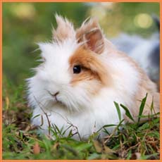
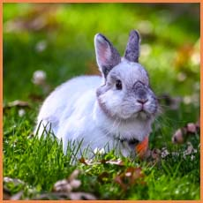
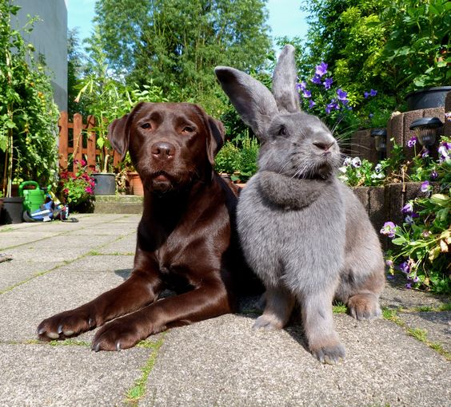

Holland Lops have cute floppy ears! They are a hybrid of the French Lop and the Netherland Dwarf. They only weigh 2 to 4 pounds and are considered miniture rabbits.

Lionhead
Due to the fluffy mane they are called Lionheads! They are a hybrid of the miniature Swiss Fox and Netherland Dwarf.

Netherland Dwarf
These are the tinest of the rabbit breeds. Their ears are usually short they have an infantile appearance even into adulthood.

Flemish Giant
These adorable giants are the largest of the domestic rabbits! Sadly they were originally breed for meat and fur. Luckily they've grown in popularity as domestic pets. They are known to called "Gentle Giant" due to their docile behavior.
Is a Rex Rabbit with a hairless genetic disorder. Caused by parents having the ff gene (hairless gene). When two rabbits are bred with the same gene they will produce a hairless rabbit in every litter. Most don't live past 4 weeks of age.
Some rabbits who have this disorder grow fine fur all over their bodies, or grow patchy fur.